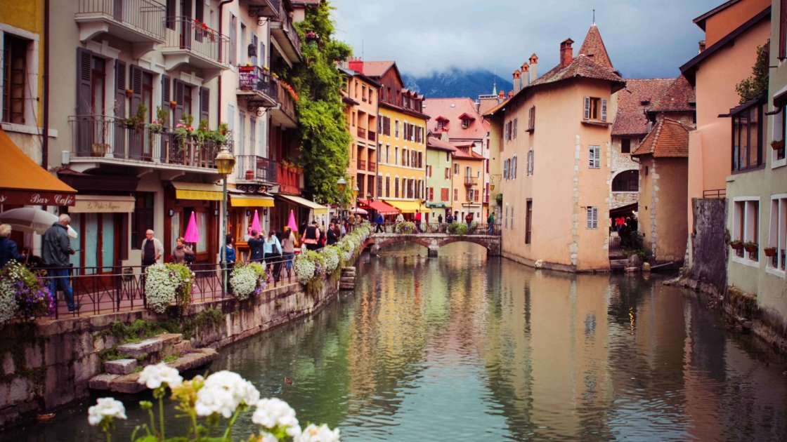

Кольмар
Якщо і є на землі спокійний і затишний куточок, який наче зійшов зі сторінок старих казок, то це однозначно Кольмар. Настільки барвистий і мальовниче місто, що просто очі розбігаються, душа не натішиться, а їхати вже точно не захочеться — так тут приємно і затишно.
Кольмар — одне з найромантичніших місць Ельзасу, куди приїжджають, щоб помилуватися архітектурою, скуштувати смачні французькі ласощі, запити все це місцевими насиченими винами і просто чудово відпочити від сірих буднів і робочої метушні великих міст. Найкраще приїжджати в Кольмар, звичайно ж, навесні, коли фарби міських будинків змішуються з цвітінням природи.
Будучи в Кольмарі, ви обов'язково повинні заїхати в село Эгисхайм. Чому? Та тому що в 2013 році (а з тих пір нічого не змінилося) її визнали найкрасивішою селом Франції! Село зовсім невелика, буквально пару вулиць, але вже дуже красиве місце. Побувавши тут, навіть найактивніші і світські захочуть хоч на пару днів «відірватися від мирської суєти».
Прямий поїзд відправляється зі Страсбурга кілька разів в день і йде до Кольмара півгодини, а дорога з Цюріха на авто займе близько 1,5 годин.
Манарола
Манарола — дивовижне старовинне містечко в Італії. Заснований він був багато століть тому на скелі біля узбережжя Лігурійського моря і з тих пір не втратив своєї чарівності. Та ще й оточений мальовничими садами і виноградниками. Воістину райське місце!
Манарола — це відмінний варіант для вікендів, так як містечко невелике і розваг не так вже й багато. Пляжі тут дуже маленькі, так що провести весь день біля моря — не найкраща ідея. А ось зайнятися дайвінгом варто обов'язково, так як саме Манарола вважається в Італії одним з кращих місць для цієї розваги.
Як і всі італійські міста, Манарола славиться своєю неперевершеною кухнею. А оскільки місто приморський, то, крім традиційних піц і паст, вам запропонують вишукані страви з риби. І ви тільки уявіть: вечір, вид на місто, рибний делікатес, смачне італійське вино...
Шлях з Пізи до Манароли займе 1,5 години на авто.
Ротенбург
Далі за маршрутом у нас Німеччина, а точніше — Баварія і її неймовірний, казковий Ротенбург. Місто старовинне, смачний і гарний у будь-який час року. Мабуть, єдине, що його відрізняє від багатьох інших німецьких міст, — виняткова відданість місцевих жителів, які намагаються всіма зусиллями зберегти старовинний вигляд Ротенбурга, а тому знайти хоч одну сучасну «скляшку» — неможливо. І реклама тут також не псує види.
Вузенькі вулички, мальовничі будиночки, милі герані на вікнах, старовинні вивіски на будинках майстрів, Ратуша, собори і... цілорічна Різдвяний ярмарок. Так-так, Різдво можна знайти в Ротенбурге хоч влітку, хоч навесні, а все тому, що тут є спеціальний музей Різдва, де цілий рік можна потрапити в казку. І ночами можете не турбуватися — міський страж з вечора обходить всі вулиці міста і перевіряє, щоб все було в порядку. Загалом, атмосфера середньовічних легенд збережена на всі 100%.
Найзручніше добиратися до Ротенбурга з Мюнхена – це займе близько 3 годин на поїзді.
Валетта
Ще одне місто, яким неможливо намилуватися і який поки ще не кишить туристами, — мальтійська столиця Валетта. Місто з дивовижною історією та чудовою архітектурою: десятки церков і соборів, старовинні замки і палаци, каплиці... загалом, є де прогулятися і що оглянути.
Центральні вулички міста вузенькі, тому приготуйтеся багато гуляти пішки, а якщо втомитеся, то можна покататися на яхті або катері по затоці. Якщо ж захочете насолодитися мистецтвом, то вирушайте в Королівську оперу або Національний музей образотворчих мистецтв — приємне і пізнавальне дозвілля гарантується.
У Валетту краще приїжджати навесні або восени, так як літо на острові дуже спекотне. І так, встигніть заглянути в місто до 2018, адже у цьому році Валетта стане культурною столицею Європи. І після цього так вільно і не метушливо, як зараз, там точно не буде.
Мостар
Незважаючи на всі трагічні події, які розгорталися на території Боснії близько 20 років тому, сьогодні, прогулюючись по старовинним містам країни, ви і сліду від них не знайдете. А все тому, що місцеві жителі намагалися повернути своїй землі первозданну красу, чарівність, і у них це дуже здорово вийшло.
Яскраве тому підтвердження — Мостар, старовинний, колоритне містечко, з усіх боків оточений горами. Навпіл ділить його річка Неретва, тому види з будь-якого берега відкриваються просто неймовірні. Навіть подумати страшно, що ще в 90-х це місто було практично стерте з лиця землі, а сьогодні, відродившись, немов фенікс, він знову підкорює всіх своєю красою.
Оскільки Боснія ще не є популярним серед туристів місцем для відпочинку, ціни тут приємно порадують кожного мандрівника, особливо бюджетної. Та й кафе і ресторани тут радують великими і поживними порціями за цілком розумні ціни.
До Мостара близько 2 годин на авто і зі Спліта, і з Дубровника (Авіаквитки Київ—Дубровнік; Авіаквитки Київ—Спліт)
Інсбрук
Так,
Інсбрук
не назвеш маловідомим містом серед туристів, адже це знаменитий на всю Європу гірськолижний курорт. Але все змінюється з приходом літа, коли місто живе тихим і розміреним життям. Подорож в Інсбрук влітку буде не менш цікавим, ніж в зимовий час, адже неймовірна природа Альп закохує з першого знайомства. А для того, щоб воно пройшло «на вищому рівні», вирушайте в Альпійський ботанічний сад — там є на що подивитися!
Інсбрук — воістину місто контрастів. Поряд зі старовинними будинками тут спокійно зводять ультрасучасні бізнес-центри, торговельні комплекси. Види відпочинку тут також абсолютно різні: комусь до душі будуть розкішні спа-комплекси з термальними джерелами, а хтось вибирає для себе купання в гірських озерах, риболовлю, катання на велосипедах.
Але особливо Інсбрук сподобається дамам, так як тут знаходиться музей Сваровскі — так-так, того самого «блискучого» бренду.
Пучичша
Пучишча — мальовниче селище на одному з островів Хорватії, Брача. Як і всі міста Хорватії, Пучишча славиться мальовничою природою, чудовими гірськими пейзажами і старовинною архітектурою. А ще селище знаменитий своєю прекрасною бухтою з кришталево чистою водою, купатися в якій одне задоволення.
Всі, хто приїжджає сюди відпочити, розсипаються в компліментах місцевої кухні і провину, а гурмани стверджують, що саме тут роблять саме ароматна оливкова олія.
Пучишча — це ідеальний і доступний варіант для літнього відпочинку біля моря. У першу чергу тому, що тут вам не доведеться змагатися за місце біля води, а в морі вам ніхто не буде заважати спокійно плавати, оскільки такого напливу туристів, як на популярних європейських морських курортах, тут немає.
Відмінним сувеніром з Пучишчи будуть вироби з білого каменю, адже місцевість на весь світ славиться роботами з цього матеріалу, так і вдома на острові переважно білокам'яні.
До острова Брач можна добратися на поромі з Спліта, пором ходить кілька разів на день, час у дорозі — одна година.
Ансі
Маленька французька Венеція — саме так можна назвати мальовниче містечко Ансі, розташований на березі однойменного озера. Канали, човники, вимощені вузенькі провулки, десятки містків, італійські колодязі, старовинні будиночки, собори, замки і багато-багато квітів. Тільки милуватися і милуватися усією цією красою.
Приїжджаючи в Ансі, ви обов'язково повинні заглянути в Палац на острові, пройтися по вулиці Сент-Клер, прогулятися (а можна і поцілуватися) по мосту Закоханих і поласувати тутешніми десертами та морозивом.

Ансі хоч містечко і невеликий, але погуляти й повеселитись місцеві дуже люблять. Так, у місті буквально кожен місяць проходять якісь значущі події: наприклад, в червні 6 днів триває фестиваль анімаційного кіно, в липні 4 ночі поспіль насолоджуються блюзом, в серпні біля озера милуються барвистими феєрверками, а в жовтні об'їдаються ласощами на фестивалі врожаю. Загалом, коли б ви не прибули в Ансі, культурна програма гарантована.
Найпростіше доїхати в Ансі з Женеви; сюди ходять регулярні автобуси, час в дорозі — близько години.
Гетеборг
Гетеборг — місто популярний серед шведів, але він поки ще не на повну силу розкрився для інших жителів Європи. І дуже даремно. Адже, по-перше, в Гетеборзі знаходиться найбільший в Скандинавії парк розваг — «Лісеберг», по-друге, місто вважається кулінарною столицею Швеції, а значить, смачних страв і ласощів тут більш ніж достатньо, а в-третіх, ну, він дуже мальовничий і приємний.
Насправді, причини відвідати Гетеборг можна перераховувати і перераховувати. Це і найчистіші пляжі, морські прогулянки на мальовничі острови Західного архіпелагу, і безліч магазинів і торгових центрів для любителів шопінгу, і цікаві музеї в центрі міста (Музей дизайну, Музей техніки, Музей світової культури та інші), і безліч парків, мальовничих і чистих... загалом, причин поїхати більш ніж достатньо.
Торунь
Торунь — місто, де все живе і дихає історією. Кожен будинок в Торуні не тільки цікаве своєю архітектурою, а й ховає в своїх стінах чимало легенд, про яких місцеві зовсім не проти розповісти. В основному ж Торунь славиться своїми загадковими готичними будівлями, яких не так вже й багато збереглося у Східній Європі, але які завжди так цікаво розглядати.
Особливо приємно гуляти по місту вночі, коли всі вдома центру підсвічуються вогнями та яскравими гірляндами. А оригінальна Ратуша в такий підсвічуванні ще більш цікава.
У Польщі бути голодним ну просто неможливо. В Торуні таке розмаїття закладів, що кожен знайде щось до душі, і де б ви не були, вас скрізь буде чекати національна музика. Але особливою увагою користується самий старий шинок міста, який не припиняв свою роботу з XVII століття — «Під розумним фартухом». А ще ви обов'язково повинні спробувати імбирні пряники. Саме цю солодкість місцеві жителі вважають однією з традиційних, яку тут готують не одне століття.
Від Гданська до Торуні трохи більше 1,5 годин на авто.